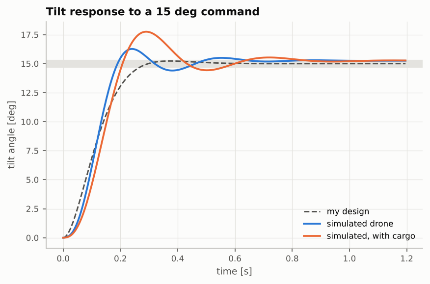
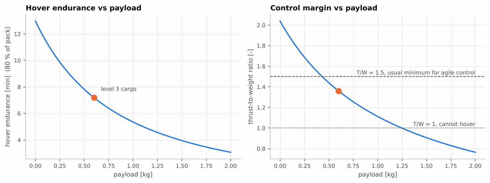
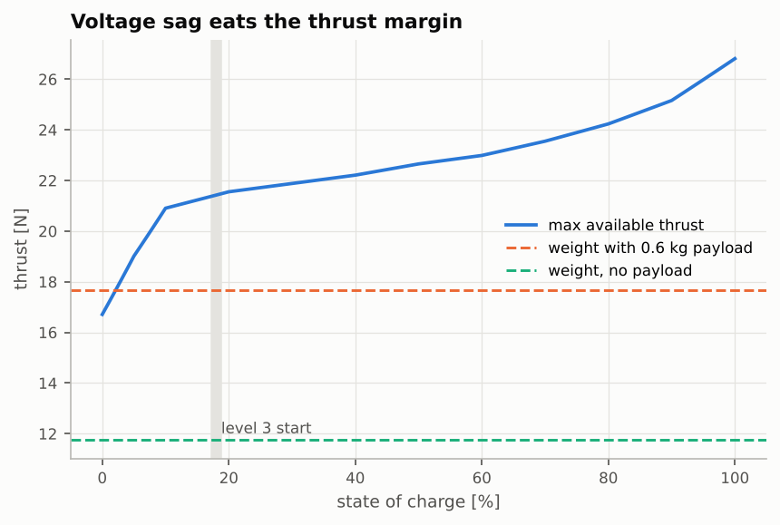

How it started
The first version was a game I made for fun. Hold W and both motors speed up, press D and the drone tilts right. It felt fine, but nothing in it was real. Gravity was 0.2 pixels per frame squared, fuel was a bar that went down, and wind was a number I added to the velocity every frame.
What bothered me was that it couldn't answer simple questions. How much heavier can the drone get before it can't fly properly? Why do real drones lose control when the battery is almost empty? So I started over with real units and real physics, and kept the game on top.
What the simulator models
- The drone is seen from behind, so the four rotors become a left pair and a right pair. Speeding up one side tilts it, and tilting is how it moves sideways.
- The motors take a moment to spin up, like real ones, so the drone never reacts instantly.
- Wind moves the air instead of pushing the drone directly. Holding still in a crosswind means leaning into it, the way real drones do.
- The battery loses voltage when the motors pull hard, and lower voltage means less thrust. A nearly empty battery can't hold up a heavy drone.
- The cargo in level 3 adds weight and also makes the drone harder to rotate, so it feels slower and heavier.
Everything is in real units (metres, kilograms, newtons, watts), and the simulation runs at a fixed 240 steps per second, so the same inputs always give the same flight.
The flight controller
Flying by hand only works because a controller keeps the drone stable underneath you. Mine works in layers, like most real flight controllers: an outer layer decides where to go, and a faster inner layer keeps the tilt where it should be.
There are four modes. Assist is the easiest: the keys set how fast you go, and when you let go the drone brakes and holds its position, like a camera drone. In Angle the keys set the tilt and the throttle, so stopping is up to you. In Rate nothing levels the drone for you, which is how racing pilots fly. In Auto the drone plans a route through the gates and flies it on its own.
Tuning the inner layer took the most time. I aimed for a tilt response that is fast but settles without bouncing. The graph shows what I designed and what the simulated drone actually did.

What I found out
Once the physics was real, I could finally ask the questions the old game couldn't answer. These two decided how level 3 works.


To make sure the numbers can be trusted, I also wrote automated tests: the drone has to hover in place at the right motor speed, fall like a real object when the motors are off, and the autopilot has to finish every level. The browser version gives the same results as the Python version.
What I'd add next
- Hang the cargo on a rope, so the controller has to stop it from swinging.
- Make it fully 3D.
- Add sensor noise, since a real drone never knows its exact tilt.
Run it locally
The desktop version uses pygame. It saves a flight log every time you finish a level, and it comes with the scripts that make the graphs on this page.
pip install -r requirements.txt python main.py # fly python -m analysis.flight_report # graphs for your logged flights python -m pytest # run the checks